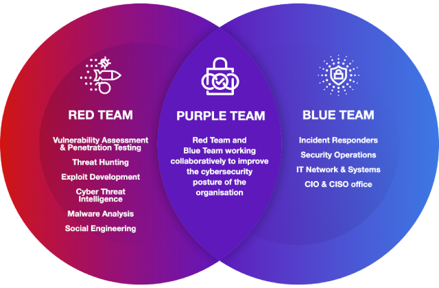

Começando na área de segurança
Publicação realizada por axroot

Sobre axroot

axroot
Venho estudando segurança ofensiva há cerca de 5 anos. Iniciei minha trajetória no campo do desenvolvimento, simultaneamente mergulhando no estudo de hacking como um hobby. Em 2021, decidi realizar uma transição da área de desenvolvimento para a área de segurança, começando minha atuação no Blue Team (parte defensiva). Atualmente, stou envolvido no Red Team (parte ofensiva da área de segurança), pois é a sub-área que desperta meu maior fascínio e à qual dedico grande parte dos meus estudos.
Introdução
O maior desafio enfrentado por muitas pessoas que desejam ingressar na área de segurança não é a falta de informação, mas sim o excesso dela.
Neste post, meu objetivo é fornecer um direcionamento inicial com base na minha experiência na área de segurança. Vou apresentar um panorama geral
desse vasto mundo da segurança, oferecer recomendações de conteúdos para estudo e traçar uma trilha que pode ser seguida por aqueles que desejam ingressar
na área de segurança ofensiva, que é onde possuo maior expertise.
Conhecendo a área de segurança
A área de segurança é composta por três equipes principais: o Blue Team (time azul), o Red Team (time vermelho) e o Purple Team (time roxo).

1 - Blue Team (Time Azul): O Blue Team é responsável pela defesa e proteção dos sistemas e redes contra ameaças de segurança. Eles lidam com a implementação de
medidas preventivas, monitoramento de eventos de segurança, detecção de intrusões e resposta a incidentes. Os membros do Blue Team trabalham para fortalecer as
defesas e garantir a segurança dos ativos de uma organização.
2 - Red Team (Time Vermelho): O Red Team é encarregado de realizar testes de segurança ofensivos. Seu objetivo é simular ataques cibernéticos reais para identificar
vulnerabilidades e fraquezas nos sistemas de uma organização. Os membros do Red Team utilizam técnicas e ferramentas para explorar brechas de segurança, ajudando a
melhorar a postura defensiva da organização.
3 - Purple Team (Time Roxo): O Purple Team é uma combinação dos times Blue Team e Red Team. Seu papel é promover a colaboração e a troca de conhecimentos entre as
equipes defensiva e ofensiva. Os membros do Purple Team trabalham em conjunto para aprimorar as estratégias de segurança, realizando testes, avaliando resultados e
aperfeiçoando as práticas de defesa e resposta a incidentes.
Essas três equipes desempenham papéis complementares na área de segurança, visando proteger os sistemas, identificar pontos fracos e melhorar continuamente as defesas de uma organização contra ameaças cibernéticas.
Por onde começar a estudar
Devemos primeiramente ter em mente que na área de segurança como em qualquer outra de TI seremos eternos apredizes, estaremos sempre aprendendo coisas novas pois a tecnologia e as metodologias estão sempre em evolução.